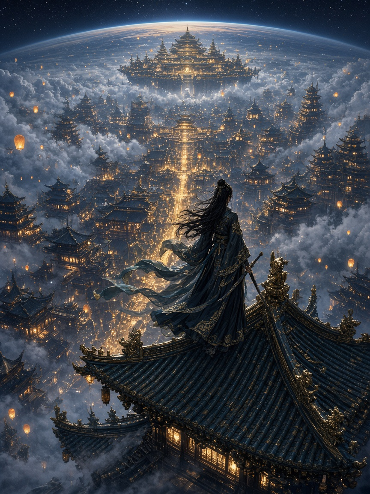
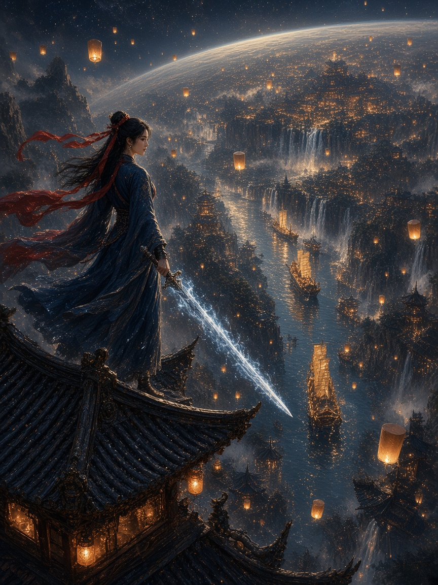
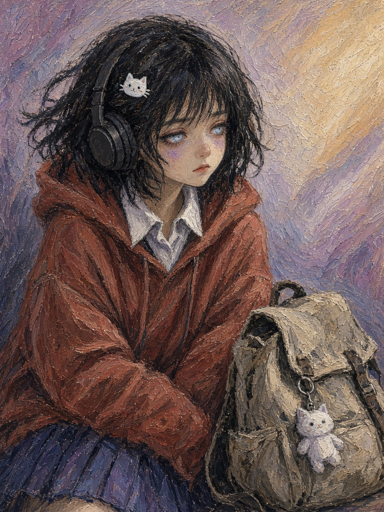
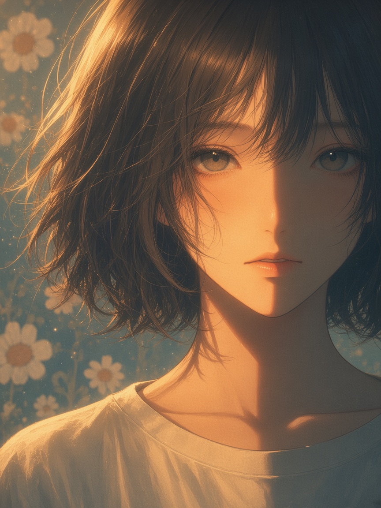
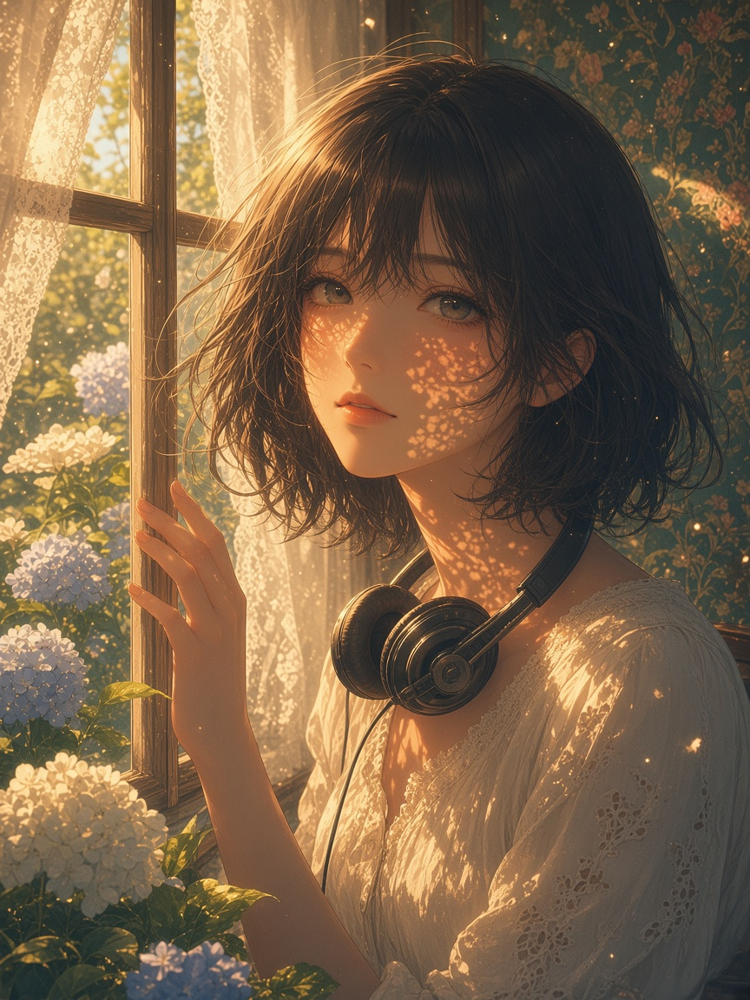
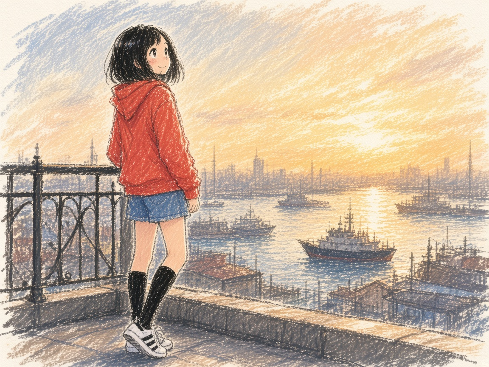
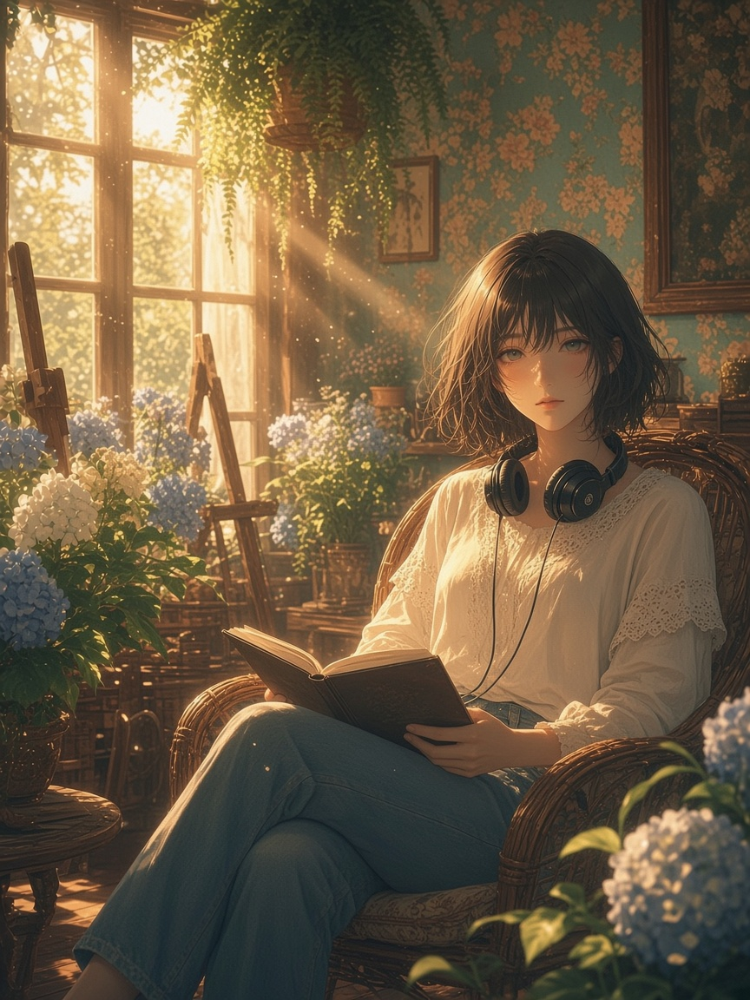
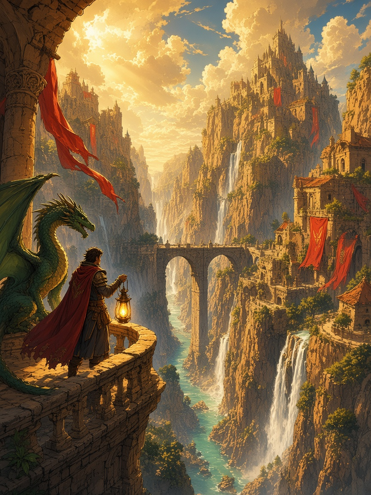

🎨 pmem-art Showcase — 原图视觉解构 · R1 → R2 → R3 多轮自评收敛 · 低/中/高/改构图能力边界画廊
展示 pmem-art 在空项目冷启动（仅挂载 ~/.pmem-art/shared/ 14 张跨项目全局基础美术卡片，零项目历史先验）下，从任意风格参考原图（Style Reference）出发：
1) 原图五维解构 → 2) R1 首轮生成 → 3) R2 缺陷修补 → 4) R3 高强度创意跃升定稿，以及低 (low) / 中 (medium) / 高 (high) / 定向改构图 (recompose) 四档收敛强度的完整能力边界。
🏛️ 一、核心风格演进集（Cases 01–03）：参考原图 (Style Reference) → R1 → R2 → R3 终极定稿
Case 01 · 东方仙侠不夜城高空原画 (pmem_01_celestial_night_city)

高空屋顶俯瞰古城的氛围参考图，远景天际线与近景瓦片细节较模糊，人物姿态静态。

冷启动首轮：注入全局「70-20-10 冷暖双色」与「三层大气透视」卡片，建立高空俯瞰纵深。

第二轮修正：补充漫天孔明灯与弧形星球天际线，但女侠长剑与两侧崖壁仍缺爆发力。

Showcase 级跃升：朱红长绸迎风翻飞、长剑迸发寒霜雷光电弧、两侧悬崖飞瀑直落运河花船，视觉冲击力拉满。
High-angle oriental fantasy night city concept art, lone female swordswoman on foreground tiled pagoda roof, vast glowing golden street axis below, midnight blue atmosphere.
next_fix (R1→R2): Add hundreds of rising warm Kongming sky lanterns, curved planetary nebula horizon, and sharper foreground ceramic roof tiles.
next_fix (R2→R3 High-Scale): Flowing crimson silk hair ribbons in mountain gale, unsheathed longsword crackling with cyan-white frost aura, cliffside waterfalls cascading into a grand canal filled with lantern-lit dragon barges.
Case 02 · 300g 冷压粗纹纸油画棒少女 (pmem_02_pastel_sketch_girl · 粗纹纸飞白空气感与黑红明度层次跃升)

300g 粗纹纸油画棒红帽衫坐姿少女参考，平光居中，缺乏深色视觉重音与光影方向感。

冷启动首轮：还原了全身坐姿与粗纹纸底，但姿态呆板、红色涂抹过满缺乏透气感。

虽修好了手部与鞋带并增加背景冷暖笔触，但严苛重审指出：粗纹纸凹槽飞白不足、缺少黑色配饰压住红帽衫明度。

Showcase 级跃升：300g 粗纹水彩纸凹槽飞白颗粒感极强，颈部哑光黑耳机+红帽衫+左侧黑背包猫咪挂件明暗层次丰富，右上金黄油画棒丁达尔光束斜射！
Hand-drawn oil pastel sketch on 300gsm cold-press coarse paper, girl in red hoodie, denim shorts, black knee-high socks and white sneakers sitting in profile.
next_fix (R1→R2): Add loose diagonal cool-blue vs warm-amber background pastel strokes and refine hand/sneaker lace details.
next_fix (R2→R3 High-Scale): 1) Heavy 300gsm rough cold-press paper tooth with airy unpainted cream paper gaps (飞白留白) inside the crimson hoodie strokes; 2) Chunky matte-black over-ear headphones around neck + charcoal backpack with white cat keychain for deep black-vs-red tonal hierarchy; 3) Bold diagonal golden-ochre oil pastel sunbeams from upper right.
Case 03 · 窗边木漏日逆光少女特写 (pmem_03_sunlit_window_portrait · R3 打破平视证件照重构 3/4 倚窗回眸)

正面平视胸像参考，左右垂直一刀切阴影，复古青色碎花背景与胶片噪点。

冷启动首轮：复刻了原图正面平视与垂直二分阴影，构图过于保守。

触发收敛停滞预警：R2 相对 R1 仅微调了发丝光与空气微尘，仍停留在呆板的正面平视大头照，未展现窗户与木漏日叙事。

Showcase 级大胆重构：打破正面平视，重构为 3/4 倚窗回眸机位！指尖轻触木窗框，窗外蓝白绣球花与蕾丝窗帘投下斑驳木漏日 (Komorebi)，肌肤次表面散射极富生命力！
Frontal close-up anime portrait of a girl with dark bob hair, sharp vertical chiaroscuro sunlight split, muted teal daisy wallpaper background.
next_fix (R1→R2): Add golden rim-lit hair strands, soft bloom, and floating dust motes.
next_fix (R2→R3 High-Scale): Break flat frontal crop into expressive 3/4 over-the-shoulder window-side framing; hand resting gently on vintage wooden window frame with sheer lace curtains and blooming blue-white hydrangeas outside; intricate Komorebi dappled sunlight across cheekbone, neck, and eyelet-lace blouse; dark retro headphones around collar for tonal depth.
🌍 二、跨风格独立原图集（Cases W01–W03）：参考原图 (Style Reference) → R1 → R2 → R3 完整演进
Case W01 · 奇幻峡谷垂直巷道概念设计 (web_01_vertical_alley · 俯视深渊透视 + 丁达尔神光)

垂直峡谷巷道概念参考图，左上屋檐趴着小绿龙，底部有蓝光雾气。

冷启动首轮：建立陡峭三点俯视消失点与木栈桥交错纵深。

第二轮修正：强化前景绿龙鳞片细节、石雕门廊与谷底青蓝荧光雾气对比。

Showcase 级跃升：右上裂谷劈下金色丁达尔体积光束，绿龙双翼逆光透亮，悬崖绯红金纹战旗飘扬，谷底石拱桥行人点缀出宏大史诗尺度。
Case W02 · 北欧峡湾木屋港口绘本插画 (web_02_nordic_harbor · 手绘水彩纸纹 + 黄金时刻双光源)

北欧木屋海港前的传统服饰少女与拟人橘猫水彩插画参考。

冷启动首轮：建立北欧 Bunad 刺绣服饰与木屋海港近中远景层次。

第二轮修正：细化水彩纸纹肌理、橘猫海军礼服与白桦树桩质感。

Showcase 级跃升：引入雨后湿润鹅卵石码头倒影、少女手中暖光黄铜提灯与夕阳帆船双光源交相辉映，橘猫船长指向远方雪山海鸥，叙事感拉满。
Case W03 · 印象派光影厚涂油画肖像 (web_03_impressionist_portrait · 室内暗调升级地中海阳光柱廊)

古典印象派油画肖像参考，笔触松散，背景较暗。

冷启动首轮：建立伦勃朗侧逆光、白绸缎礼服与红玫瑰胸花层次。

第二轮修正：强化珍珠项链、薄纱披肩与厚涂刮刀笔触质感。

Showcase 级跃升：打通索罗亚 (Sorolla) 标志性的地中海阳光大理石柱廊与碧海远景，炽烈阳光在白绸缎与粉色薄纱上激发出极具雕塑感的厚涂高光与冷紫暗部反射。
🎚️ 三、能力边界全景矩阵：低强度 (Low) vs. 中强度 (Medium) vs. 高强度 (High) vs. 定向改构图 (Recompose)
通过 pmem_art.py converge start --scale {low,medium,high,recompose} [--recompose-dir "..."] 触发不同内部权重与改动阈值，覆盖从保守修瑕、稳健优化、大胆光影重构到用户指定方向彻底改构图的完整能力光谱：
风格组 A · 东方仙侠不夜城原画：三种收敛强度 +「高空俯瞰 → 底层运河石拱桥仰视」改构图

Prompt Delta ≤ 20%：100% 锁死原图屋顶俯瞰机位与元素数量，仅修复近景瓦片咬合透视与长剑笔直度，绝不乱加船只或瀑布。
Prompt Delta ~ 40%：保持原图屋顶俯瞰构图框架不变，主动补足漫天孔明灯、街道暖金光雾与远景弧形星球天际线。
Prompt Delta ~ 70%：重构极具爆发力的前景朱红飘带、长剑寒霜电弧与两侧万丈悬崖飞瀑入江，打造 Showcase 级冲击力。

指令：「从高空屋顶俯瞰改为底层运河石拱桥仰视全景，女侠移至左侧三分点石桥回眸」——完美保留画风与灯火基因，彻底反转镜头视角！
风格组 B · 300g 粗纹纸油画棒少女：三种收敛强度 +「地面坐姿近景 → 天台凭栏远眺夕阳海港全景」改构图

Prompt Delta ≤ 20%：严格锁死原图底部居中正侧坐姿与无配饰设定，仅修补双手搭膝五指结构、球鞋透视与 300g 粗纹纸颗粒。
Prompt Delta ~ 40%：保持坐姿构图，在背景加入左上冷蓝与右上暖黄的油画棒排线笔触，柔化面部腮红过渡。
Prompt Delta ~ 70%：引入右上粗犷金黄油画棒丁达尔光束、颈部哑光黑耳机+左侧黑背包猫咪挂件压住红帽衫明度，强化粗纹纸飞白透气感。

指令：「从低头坐姿近景改为黄金时刻天台栏杆远眺海港全景，少女站立在左侧三分点」——100% 延续 300g 粗纹纸油画棒排线笔触，完成坐姿特写到海港全景的跨越！
风格组 C · 窗边木漏日逆光少女：三种收敛强度 +「胸像正面特写 → 复古阳光植物画室藤椅全景」改构图
Prompt Delta ≤ 20%：锁死原图正面平视胸像裁切与垂直二分明暗交界线，仅修整五官对称度与胶片颗粒均匀度。
Prompt Delta ~ 40%：保持正面胸像构图不变，补足左侧发丝逆光金边、脸颊暖橘次表面散射与空气悬浮光斑。
Prompt Delta ~ 70%：打破呆板正面平视，重构为 3/4 倚窗回眸近景，左侧木窗蕾丝与蓝白绣球花投射斑驳木漏日 (Komorebi) 光影。

指令：「从胸像正面特写改为复古阳光植物画室中全景，少女坐右侧三分点藤椅看画册，左侧落地窗丁达尔光束贯穿画室」——完美继承青绿碎花墙纸与暖金逆光基因！
风格组 D · 奇幻峡谷城邦概念设计：三种收敛强度 +「狭窄天井俯视 → 高空悬崖露台平视跨谷大桥史诗全景」改构图
Prompt Delta ≤ 20%：锁死原图垂直天井俯视机位，仅修复木栈桥透视交接与石砖墙面结构。
Prompt Delta ~ 40%：保持天井俯视框架，补足前景绿龙鳞片高光、窗户暖橙灯火与谷底青蓝荧光雾气对比。
Prompt Delta ~ 70%：从右上裂谷引入强力金色丁达尔神光劈入深渊，绿龙翼膜逆光透射，悬崖挂满绯红金纹战旗。

指令：「从狭窄天井俯视改为高空悬崖露台平视偏仰视史诗全景，左下露台红袍旅人与绿龙并肩远眺跨谷石拱大桥与千丈飞瀑」——视野豁然开朗！